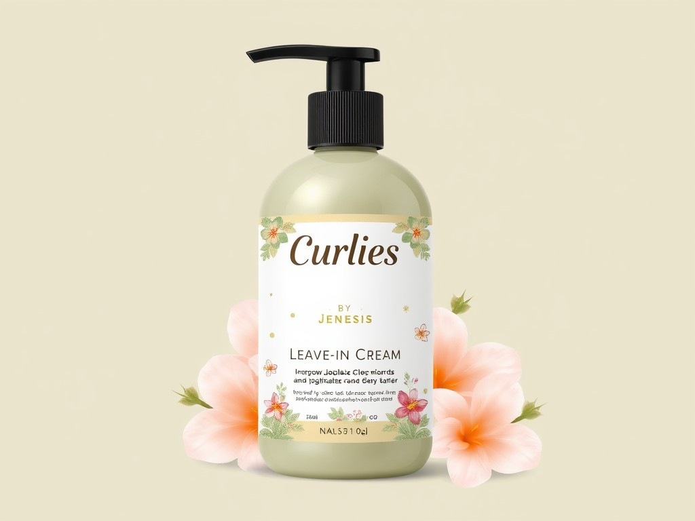

Curly Love Shampoo está formulado para proporcionar hidratación intensa a los cabellos rizados..
Su fórmula suave limpia sin eliminar la humedad natural del cabello. Contiene ingredientes hidratantes que ayudan a definir los rizos y reducir el frizz. Al igual que el Acondicionador, es libre de sulfatos y parabenos, lo que lo hace ideal para mantener la salud y la hidratación del cabello rizado.
$1700
Tratamiento Curly BY Jenesis
Curly Love Tratamiento está formulado para proporcionar hidratación intensa a los cabellos rizados.
Su textura cremosa ayuda a desenredar el cabello, facilitando el peinado. Contiene ingredientes nutritivos que suavizan los rizos, mejoran la definición y minimizan el frizz. Al igual que el shampoo, es libre de sulfatos y parabenos, lo que lo hace ideal para mantener la salud y la hidratación del cabello rizado.
$700

Leaven Curly BY Jenesis
Curly Love Leaven está formulado para proporcionar hidratación intensa a los cabellos rizados.
Su textura cremosa ayuda a desenredar el cabello, facilitando el peinado. Contiene ingredientes nutritivos que suavizan los rizos, mejoran la definición y minimizan el frizz. Al igual que el shampoo, es libre de sulfatos y parabenos, lo que lo hace ideal para mantener la salud y la hidratación del cabello rizado.
$700
Acondicionador Curly BY Jenesis
Curly Love Acondicionador está formulado para proporcionar hidratación intensa a los cabellos rizados.
Su textura cremosa ayuda a desenredar el cabello, facilitando el peinado. Contiene ingredientes nutritivos que suavizan los rizos, mejoran la definición y minimizan el frizz. Al igual que el shampoo, es libre de sulfatos y parabenos, lo que lo hace ideal para mantener la salud y la hidratación del cabello rizado.
$1700
Crema de peinar Curly BY Jenesis
Curly Love crema de peinar está formulado para proporcionar hidratación intensa a los cabellos rizados.
Su textura cremosa ayuda a desenredar el cabello, facilitando el peinado. Contiene ingredientes nutritivos que suavizan los rizos, mejoran la definición y minimizan el frizz. Al igual que el shampoo, es libre de sulfatos y parabenos, lo que lo hace ideal para mantener la salud y la hidratación del cabello rizado.
$700
Protector Termico Curly BY Jenesis
Curly Love Protector termico está formulado para proporcionar hidratación intensa a los cabellos rizados.
Su textura cremosa ayuda a desenredar el cabello, facilitando el peinado. Contiene ingredientes nutritivos que suavizan los rizos, mejoran la definición y minimizan el frizz. Al igual que el shampoo, es libre de sulfatos y parabenos, lo que lo hace ideal para mantener la salud y la hidratación del cabello rizado.